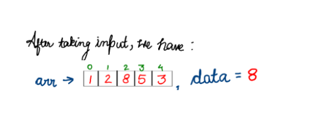
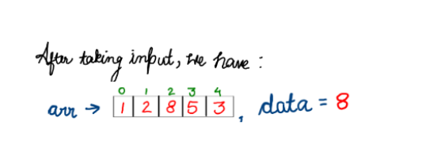
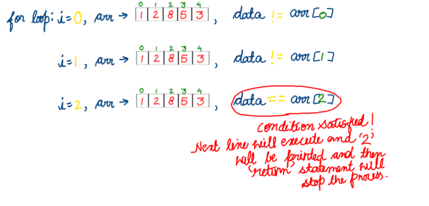
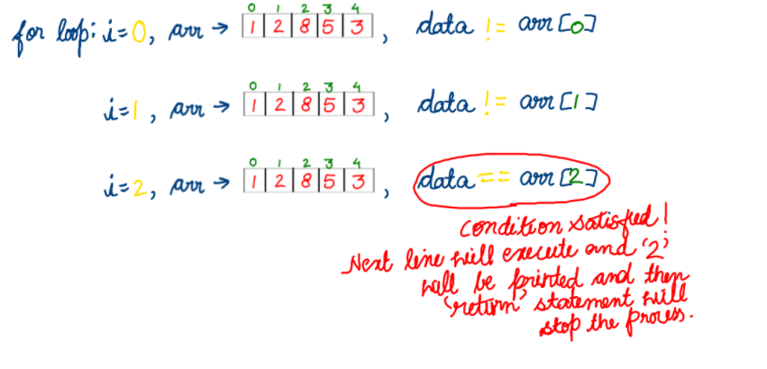

Find Elements in an Array
Dear readers, Let's now move to the next problem, that is ‘Find Element in an array’ of chapter ‘array and functions’. So, reader, if you have already done or at least tried the previous question which was about the span of an array, then this one is going to be as easy as pie for you. Just continue reading.
Understand the Problem:Just like in the previous question, first of all you will get a number n, which indicates the length of an array. Then you will get n more inputs corresponding to each index of the array. After that you will be given one more input, d as data, for which you have to find, at which index of array d is present. And in case d is not present in the array then you need to print -1. You may also watch the video for better understanding of the question. Before you move further, it is advised that you spend enough time to understand the question and give it a fair try .
input1:number of ele
input2:Elements of array
input3:Element to searched
output:index of element or -1 if not present
Moving on:So first of all you will be writing an input statement for an integer n. This n, which represents length of the array will be helpful in defining an array say ‘arr’. Now, you need to run a for loop on the array with integer i, initialized to 0. Also satisfying the condition (i < n) and with an increment of one to i, in each iteration and inside this for loop you will be taking input for ith element of array arr.
Let's assume, the user enters n as 5 in input and an array arr is initialized of length 5. So with the help of a for loop, values to each index of the array will be allocated. Let’s say you assigned 1, 2, 8, 5 and 3 as values to corresponding indices of arr. Moving further, now your aim is to find the index of data in array arr, you need to find min and max values of the array. So give it a thought and try to figure out how you can find it. Okay, if you couldn’t find it, don’t feel bad. Let’s look at it together. So for finding the index of data, it is required that data is present in the array. To check this, you need to apply a loop on the array, and using conditional ( if(d == arr[i] ) ), you can make sure that whether data is present in the array or not. Whenever, ( if(d == arr[i] ) ) this condition is satisfied, index i will be printed and the return statement will restrict the further iterations of the loop and stop the execution. And in case, a value equivalent to data is present more than once in a given array, then the first index with value equal to data will be printed. Also in case, where value equivalent to data is not present in the array then, after control comes out of the for loop, -1 gets printed.
 

 

So reader, if you still face any problem in understanding this part, we advise you to watch this portion of the video.